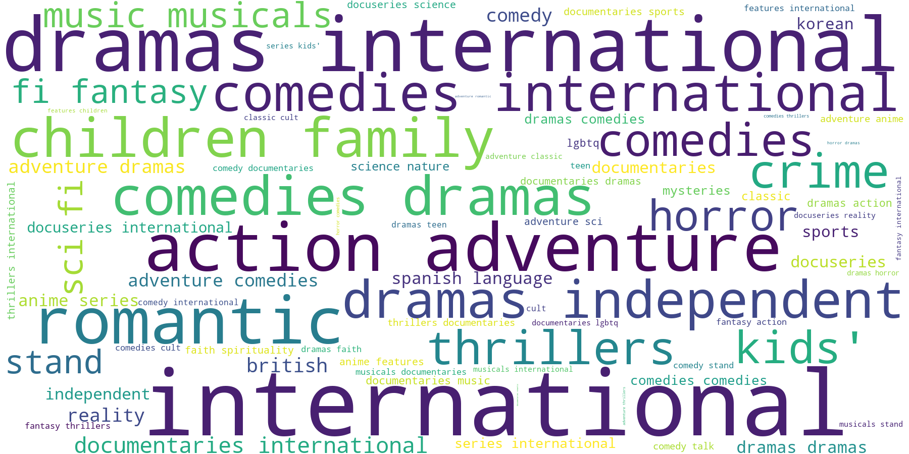
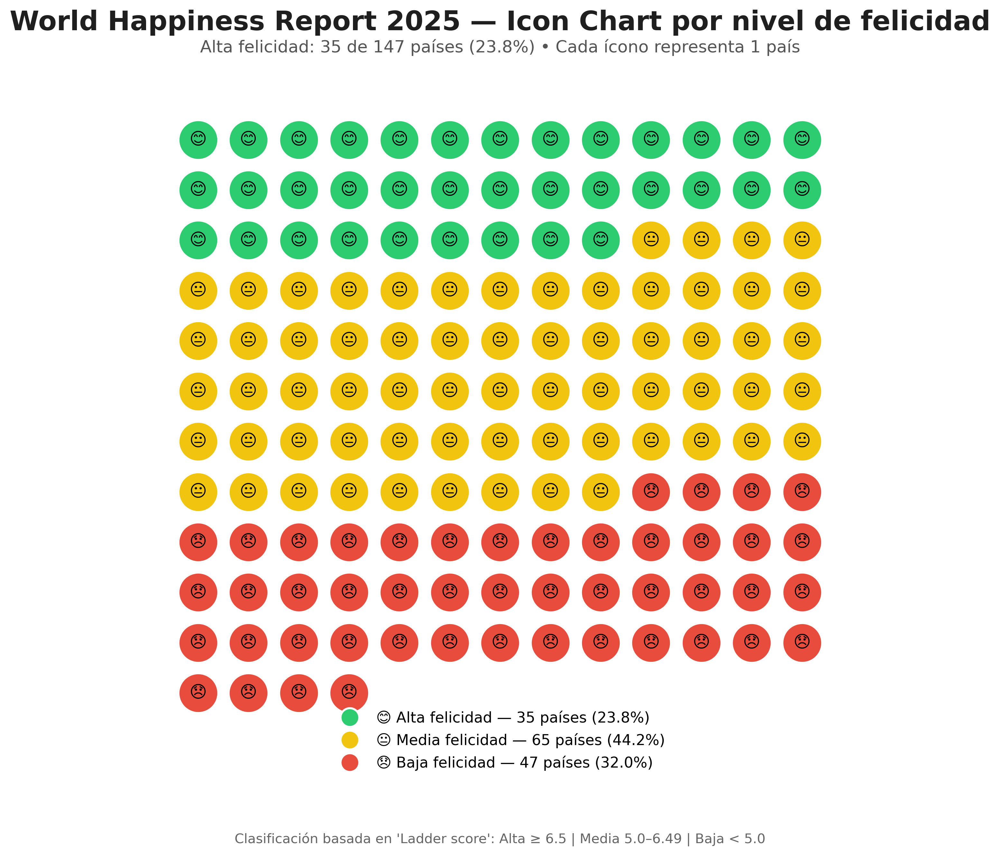
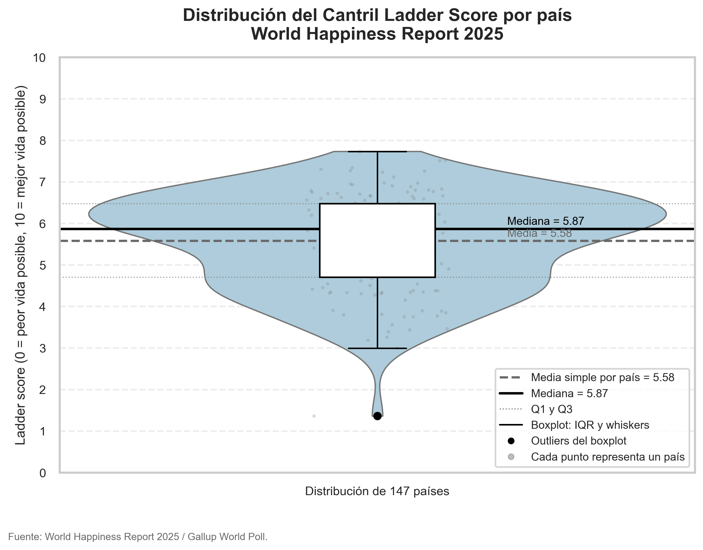

1. Introducción
En esta PEC 2 el objetivo es explorar tres técnicas de visualización de datos, haciendo énfasis en su adecuación según el tipo de información y el objetivo comunicativo. Esta actividad utiliza un enfoque inverso, partiendo de la técnica para identificar qué tipos de datos se adaptan mejor a cada representación.
Se seleccionaron datos abiertos adecuados y se crearon tres visualizaciones reales publicadas en este post
2. Desarrollo
Una buena visualización no consiste únicamente en hacer gráficos, sino en seleccionar la representación adecuada según el tipo de dato y el mensaje que se desea transmitir. Además, es importante considerar aspectos como la claridad visual, el uso adecuado del color, la jerarquía de la información y la eliminación de elementos innecesarios que puedan distraer al lector.
En este sección se analizan las tres técnicas de visualización: Word Cloud, Icon Chart y Violin Plot.
2.1. Word Cloud

La nube de palabras (word cloud) es una forma sencilla y visual de mostrar qué palabras aparecen con más frecuencia en un texto. Cuanto más grande sale una palabra, más veces se repite. En este caso, la he aplicado a los títulos de Netflix, usando la columna de géneros para ver qué tipos de contenido son los más comunes en la plataforma.
Esta técnica funciona muy bien cuando quieres tener una visión rápida y general de los temas o categorías más importantes en un conjunto de texto. Lo bueno es que es muy intuitiva y atractiva a la vista: en un solo vistazo puedes ver qué es lo que más pesa. Lo malo es que no permite comparar frecuencias con precisión y las palabras se colocan de forma aleatoria, sin ningún orden lógico.
2.2. Icon Chart (Pictogram Chart)

El Icon Chart (o pictograma) es una técnica de visualización que usa iconos repetidos para representar datos. Cada icono equivale a una unidad (en este caso, un país), lo que hace que la información sea muy fácil de entender a simple vista.
En esta actividad se ha aplicado al World Happiness Report 2025. He agrupado los países en tres categorías según su nivel de felicidad: alto, medio y bajo. Cada icono representa un país, y con diferentes colores y emojis se distingue claramente a qué grupo pertenece. Lo mejor de esta técnica es que es muy comunicativa y accesible. Cualquiera puede entenderla rápidamente, incluso sin tener experiencia en datos. Lo malo es que no es precisa: es difícil comparar valores exactos o hacer un análisis detallado con ella.
2.3. Violin Plot

El violin plot es una técnica de visualización que muestra cómo se distribuye una variable numérica continua. Combina la forma de un diagrama de densidad (que indica dónde se concentran más los valores) con elementos típicos del boxplot, como la mediana y los cuartiles.
En este caso, se ha aplicado al indicador Ladder score del World Happiness Report 2025 para analizar cómo se distribuyen los niveles de felicidad entre los países del mundo. La visualización combina un violin plot con un boxplot superpuesto y puntos individuales, lo que permite ver al mismo tiempo la forma general de la distribución, los valores centrales y cómo se dispersan los datos.
Este gráfico es ideal cuando se trabaja con datos numéricos continuos y es necesario entender la forma de la distribución, dónde se agrupan la mayoría de los países y si hay valores extremos (outliers). Lo mejor es que ofrece una visión bastante completa y rica de los datos. Lo malo es que puede resultar complejo interpretar para quien no está familiarizado con estadística, porque la parte de la densidad no es tan intuitiva a primera vista.
3. Conclusión
Esta actividad permite elegir la técnica de visualización adecuada según los datos y el mensaje que deseamos transmitir. Cada una tiene sus fortalezas: el icon chart es ideal para mostrar proporciones de forma clara e intuitiva, el violin plot permite ver en profundidad la distribución de los datos aunque es más complejo, y la word cloud ayuda a identificar rápidamente los términos más frecuentes en textos.